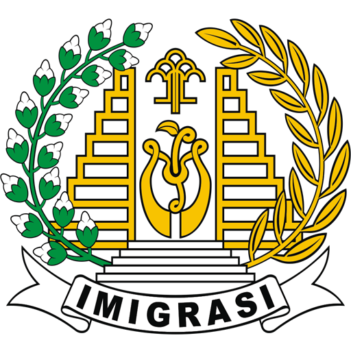

Imigrasi Malang
Hubungi Kami
Beranda
Pelayanan WNA
Persyaratan Alih Status Izin Tinggal
Alih Status Izin Tinggal
Izin Tinggal yang telah diberikan kepada Orang Asing dapat dialih statuskan
Izin Tinggal yang dapat dialihstatuskan meliputi :
Izin Tinggal kunjungan menjadi Izin Tinggal terbatas
Izin Tinggal terbatas menjadi Izin Tinggal tetap
Alih status Izin Tinggal sebagaimana dimaksud pada point 2 ditetapkan dengan Keputusan Menteri
Dasar Hukum
Undang-Undang Nomor 6 Tahun 2011 Tentang Keimigrasian
Peraturan Pemerintah Nomor 31 Tahun 2013 Tentang Peraturan Pelaksanaan Undang-Undang Nomor 6 Tahun 2011 Tentang Keimigrasian (Lembaran Negara Republik Indonesia Nomor 5409)
Peraturan Menteri Hukum dan Hak Asasi Manusia Republik Indonesia Nomor 27 Tahun 2014 Tentang Prosedur Teknis Pemberian, Perpanjangan, Penolakan, Pembatalan dan Berakhirnya Izin Tinggal Kunjungan, Izin Tinggal Terbatas dan Izin Tinggal Tetap Serta Pengecualian Dari Kewajiban Memiliki Izin Tinggal.
Persyaratan Alih Status
Alih Status Izin Tinggal Kunjungan menjadi Izin Tinggal Terbatas
Permohonan alih status Tinggal Kunjungan menjadi Izin Tinggal Terbatas diajukan sejak Orang Asing berada di Wilayah Indonesia
Alih Status Izin Tinggal Kunjungan menjadi Izin Tinggal Terbatas dapat diberikan kepada Orang asing yang :
Menanamkan modal
Bekerja sebagai tenaga ahli
Melaksanakan tugas sebagai rohaniawan
Mengikuti pendidikan dan pelatihan
Mengadakan penelitian ilmiah
Menggabungkan diri dengan suami atau istri warga negara Indonesia
Menggabungkan diri dengan suami atau istri pemegang Izin Tinggal Terbatas atau Izin Tinggal Tetap
Menggabungkan diri dengan orang tua bagi anak berkewarganegaraan asing yang mempunyai hubungan hukum kekeluargaan dengan orang tua warga negara Indonesia
Menggabungkan diri dengan orang tua pemegang izik tinggal terbatas atau izin tinggal tetap bagi anak yang berusia dibawah 18 (delapan belas) tahu dan belum kawin
Berdasarkan alasan kemanfaatan untuk kesejahteraan masyarakat dan atau kemanusiaan setelah mendapatkan pertimbangan Menteri
Dalam rangka memperoleh kembali kewarganegaraan Republik Indonesia berdasarkan ketentuan peraturan perundang-undangan; dan/atau
Wisatawan mancanegara lanjut usia
Bagi orang asing dalam rangka penanaman modal, bekerja sebagai tenaga ahli dan melakukan tugas sebagai rohaniawan, melampirkan persyaratan :
Surat penjamin dari pemimpin
Paspor kebangsaan yang sah dan masih berlaku beserta fotokopinya
Surat keterangan domisili
Surat rekomendasi dari kementrian atau lembaga pemerintah nonkementrian terkait
Rencana Penggunaan Tenaga Kerja Asing (RPTKA) dan instansi berwenang
Bagi orang asing dalam rangka mengikuti pendidikan dan pelatihan, dan mengadakan penelitian ilmiah, melampirkan persyaratan :
Surat penjamin dari Penjamin
Paspor kebangsaan yang sah dan masih berlaku beserta fotokopinya
Surat keterangan domisili
Surat rekomendasi dari kementrian atau lembaga pemerintah nonkementrian terkait
Rekomendasi untuk maksud belajar/penelitian dari instansi yang berwenang(Kemendiknas/LIPI)
Bagi anak yang pada saat lahir di Wilayah Indonesia ayah dan/atau ibunya pemegang Izin Tinggal terbatas, melampirkan persyaratan :
Surat penjamin dari Penjamin
Paspor Kebangsaan yang sah dan masih berlaku beserta fotokopinya
Fotokopi akta kelahiran
Fotokopi akta perkawinan atau buku nikah dari orang tua
Fotokpi paspor kebangsaan ayah dan/atau ibu yang sah dan masih berlaku
Fotokopi Izin Tinggal terbatas ayah dan/atau ibu yang masih berlaku
Bagi orang asing yang kawin secara sah dengan warga negara Indonesia, melampirkan persyaratan :
Paspor kebangsaan yang sah dan masih berlaku beserta fotokopinya
Surat permohonan dari ayah dan/atau ibu warga negara Indonesia
Surat keterangan domisili
Fotokopi akta perkawinan atau buku nikah
Fotokopi akta perkawinan atau buku nikah orang tua
Fotokopi surat bukti pelaporan perkawinan dari kantor catatan sipil untuk pernikahan yang dilangsungkan di luar negeri
Fotokopi kartu tanda penduduk suami atau istri warga negara Indonesia yang masih berlaku
Fotokopi kartu keluarga suami atau istri yang warga negara Indonesia
Bagi anak dari orang asing yang kawin secara sah dengan warga negara Indonesia , melampirkan persyaratan :
Paspor kebangsaan yang sah dan masih berlaku beserta fotokopinya
Surat permohonan dari ayah dan/atau ibu warga negara Indonesia
Surat keterangan domisili
Fotokopi akta kelahiran
Fotokopi akta perkawinan atau buku nikah orang tua
Fotokopi kartu penduduk ayah atau ibu warga negara Indonesia yang masih berlaku
Fotokopi kartu keluarga ayah atau ibu yang warga negara Indonesia
Bagi orang asing yang menggabungkan diri dengan suami atau istri pemegang Izin Tinggal Terbatas, melampirkan persyaratan:
Paspor kebangsaan yang sah dan masih berlaku beserta fotokopinya
Surat penjamin dari Penjamin
Surat Keterangan domisili
Fotokopi akta perkawinan
Fotokopi izin tinggal terbatas suami atau istri
Bagi anak berkewarganegaraan asing yang menggabungkan diri dengan ayah dan/atau ibu warga negara Indonesia, melampirkan persyaratan :
Paspor kebangsaan yang sah dan masih berlaku beserta fotokopinya
Surat permohonan dari ayah dan/atau ibu warga negara Indonesia
Surat penjamin dari Penjamin
Surat keterangan domisili
Akta Kelahiran
Fotokopi akta perkawinan atau buku nikah orang tua
Fotokopi kartu tanda penduduk ayah dan/atau ibu warga negara Indonesia yang masih berlaku
Fotokopi kartu keluarga ayah dan/atau ibu yang warga negara Indonesia
Bagi anak yang berusia dibawah 18 (delapan belas) tahun dan belum kawin yang menggabungkan diri dengan ayah dan/atau ibu pemegang Izin Tinggal Terbatas atau Izin Tinggal Tetap, melampirkan persyaratan :
Paspor kebangsaan yang sah dan masih berlaku beserta fotokpinya
Surat penjamin dari Penjamin
Surat keterangan domisili
Fotokopi akta kelahiran
Fotokopi akta kelahiran
Fotokopi akta perkawinan atau buku nikah orang tua
Fotokopi paspor kebangsaan ayah dan/atau ibu yang sah dan masih berlaku
Fotokopi Izin Tinggal terbatas ayah dan/atau ibu yang sah dan masih berlaku
Bagi orang asing eks warga negara Indonesia, melampirkan persyaratan:
Paspor kebangsaan yang sah dan masih berlaku beserta fotokopinya
Surat penjamin dari Penjamin
Surat keterangan domisili
Bukti yang menunjukkan pernah menjadi warga negara Indonesia
Bagi wisatawan lanjut usia mancanegara, melampirkan persyaratan :
Paspor kebangsaan yang sah dan masih berlaku beserta fotokopinya
Surat penjamin dari Penjamin
Surat keterangan domisili
Surat sponsor dari Biro Perjalanan yang ditunjuk oleh Kementrian Kebudayaan dan Pariwisata
Alih Status Izin Tinggal Terbatas menjadi Izin Tinggal Tetap
Alih Status Izin Tinggal Terbatas menjadi Izin Tinggal Tetap diberikan kepada orang asing sebagai :
Rohaniawan
Pekerja
Investor
Wisatawan Lanjut Usia mancanegara
Menggabungkan diri dengan suami atau istri pemegang Izin Tinggal Tetap
Menggabungkan diri dengan orang tua pemegang Izin Tinggal Tetap bagi anak yang berusia
Eks warga negara Indonesia
Alih status Izin Tinggal terbatas menjadi Izin Tinggal Tetap juga dapat diberikan kepada Orang Asing :
Menggabungkan diri dengan suami atau istri warga negara Indonesia yang usia perkawinannya telah mencapai paling singkat 2 (dua) tahun
Menggabungkan diri dengan ayah dan/atau ibu bagi anak berkewarganegaraan asing yang mempunyai hubungan hukum kekeluargaan dengan ayah dan/atau ibu warga negara Indonesia dan
Anak yang berusia di bawah 18 (delapan belas) atahun dan belum kawin dari orang asing yang kawin secara sah dengan warga negara Indonesia.
Alih status Izin Tinggal Terbatas menjadi Izin Tinggal Tetap bagi Orang Asing sebagai rohaniawan,pekerja,investor dan wisatawan lanjut usia mancanegara diberikan dengan ketentuan Orang Asing yang bersangkutan telah berada di Wilayah Indonesia paling singkat 3 (tiga) tahun berturut-turut sejak tanggal diberikannya Izin Tinggal terbatas
Bagi orang asing sebagai rohaniawan,pekerja,dan investor, harus melampirkan :
Paspor kebangsaan yang sah dan masih berlaku
Fotokopi Izin Tinggal terbatas
Surat keterangan domisili
Pernyataan integrasi yang telah ditandatangani oleh yang bersangkutan dan
Rekomendasi dari kementrian atau lembaga pemerintah nonkementrian terkait.
Bagi wisatawan lanjut usia mancanegara, melampirkan persyaratan :
Paspor kebangsaan yang sah dan masih berlaku beserta fotokopinya
Fotokopi Izin Tinggal Terbatas yang masih berlaku
Surat Penjamin dari Penjamin
Surat Keterangan domisili
Pernyataan integrasi yang telah ditandatangani oleh yang bersangkutan
Surat sponsor dari Biro Perjalanan yang ditunjuk oleh Kementrian Kebudayaan dan Pariwisata
Bagi anak yang akan menggabungkan diri dengan orang tua pemegang Izin Tinggal Tetap bagi anak yang berusia dibawah 18 (delapan belas) tahun dan belum kawin, melampirkan persyaratan :
Paspor kebangsaan yang sah dan masih berlaku
Fotokopi Izin Tinggal terbatas yang masih berlaku
Surat keterangan domisili
Pernyataan integrasi yang telah ditandatangani oleh yang bersangkutan
Surat Penjamin dari Penjamin
Fotokopi akta kelahiran
Fotokopi akta perkawinan atau buku nikah orang tua
Fotokopi paspor kebangsaan ayah dan/atau ibu yang sah dan masih berlaku
Fotokopi Izin Tinggal Tetap ayah dan/atau ibu yang masih berlaku
Bagi suami atau istri warga negara asing yang menggabungkan diri dengan dengan istri atau suami warga negara Indonesia, harus melampirkan :
Paspor kebangsaan yang sah dan masih berlaku
Fotokopi Izin Tinggal Terbatas yang masih berlaku
Surat Keterangan domisili
Pernyataan integrasi yang telah ditandatangani oleh yang bersangkutan
Surat permohonan dari suami atau istri warga negara Indonesia
Fotokopi akta perkawinan atau buku nikah
Fotokopi surat melaporkan perkawinan dari instansi yang berwenang untuk PErkawinan yang dilangsungkan di luar negeri
Fotokopi kartu tanda penduduk suami atau istri warga negara Indonesia yang masih berlaku
Fotokopi kartu keluarga suami atau istri yang warga negara Indonesia
Bagi anak berkewarganegaraan asing dari hasil perkawinan yang sah yang menggabungkan diri dengan ayah atau ibu warga negara Indonesia, harus melampirkan :
Paspor kebangsaan yang sah dan masih berlaku
Fotokopi Izin Tinggal Terbatas yang masih berlaku
Surat keterangan domisili
Pernyataan integrasi yang telah ditandatangani oleh yang bersangkutan
Surat permohonan dari ayah atau ibu warga negara Indonesia
Fotokopi akta perkawinan atau buku nikah orang tua
Fotokopi kartu tanda penduduk ayah atau ibu yang warga negara Indonesia yang masih berlaku
Fotokopi kartu keluarga ayah atau ibu yang warga negara Indonesia